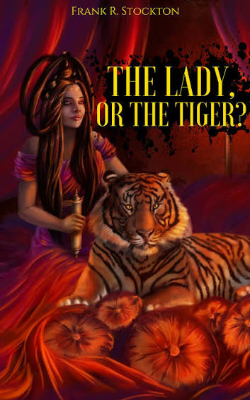

|
 |
|
Once upon a time, there was a powerful king who ruled a semi-barbaric kingdom. He believed that justice should be decided through a strange public trial.
When a person was accused of a crime, he was taken to an arena. There were two doors. Behind one door was a tiger, which would kill the accused. Behind the other door was a beautiful lady, whom the accused would have to marry immediately. The person had to choose one door without knowing what was behind it.
The king had a beautiful daughter, the Princess. She fell deeply in love with a young man who was below her social position. The king did not approve of their love.
One day, the young man was accused of breaking the king's law. He was brought into the arena to face the two doors.
The Princess knew a secret. She had discovered which door contained the tiger and which contained the lady. She also knew the lady behind one door was beautiful and had been chosen by the king as a possible bride for the young man. The Princess was extremely jealous of her.
When the young man looked at her, the Princess secretly pointed toward one of the doors.
he young man trusted her and opened the door she indicated.
The author never tells us whether the door contained the lady or the tiger. The reader must decide what the Princess chose: Did her love make her save the young man, or did her jealousy make her send him to the tiger?